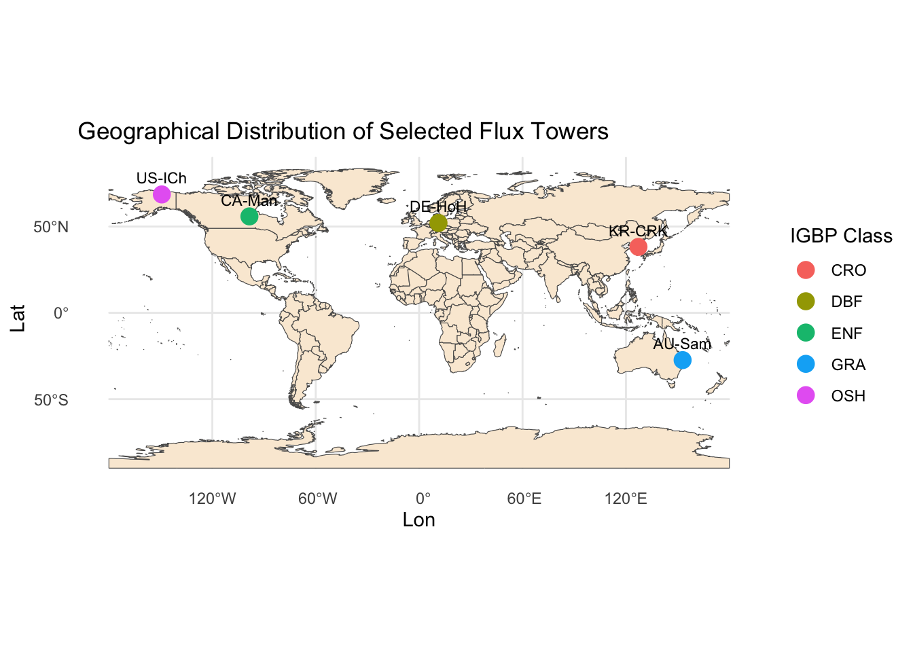
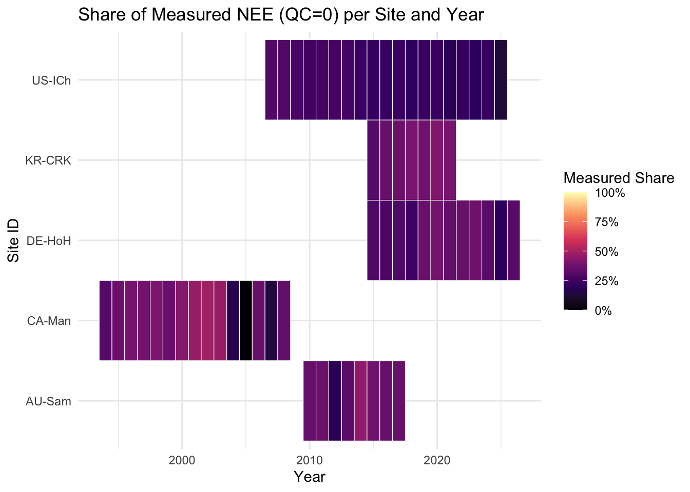
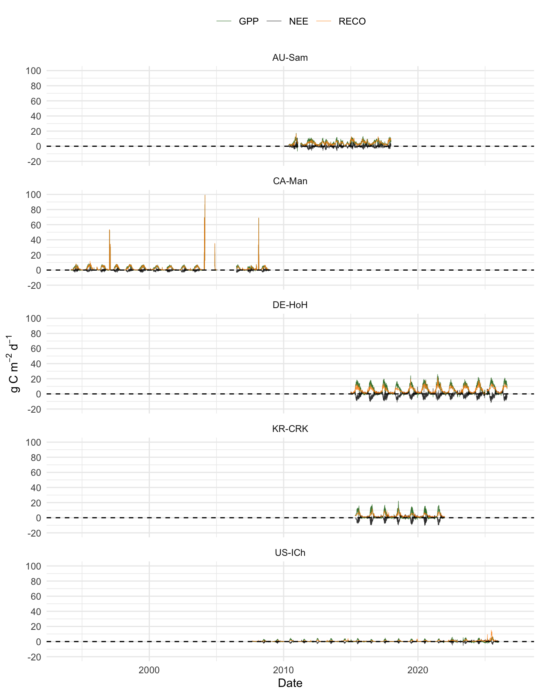
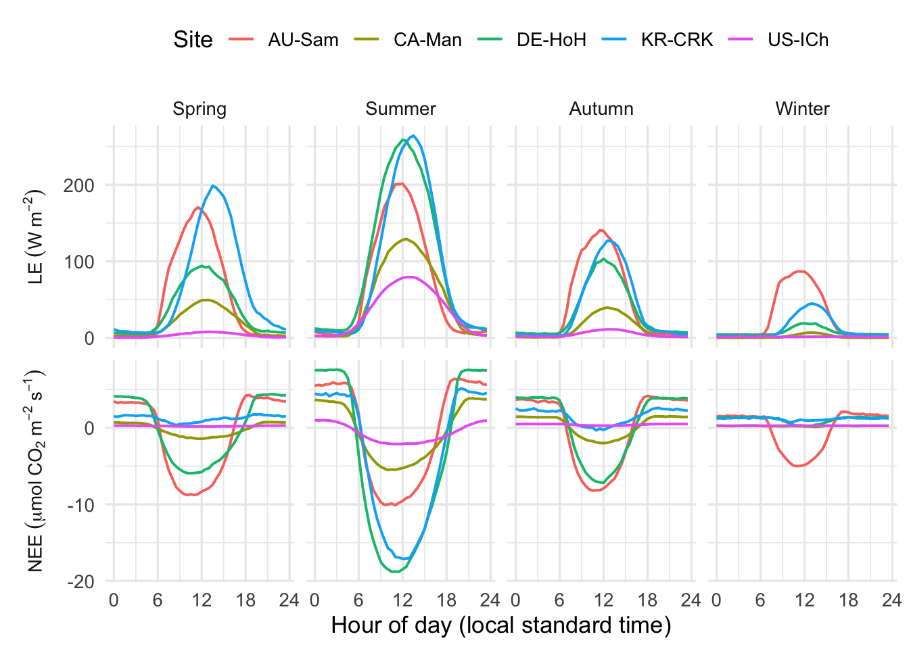
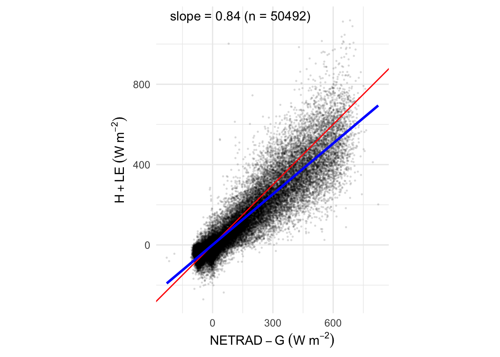

# Load necessary librarieslibrary(tidyverse)library(lubridate)library(knitr)library(kableExtra)library(sf)library(rnaturalearth)library(viridis)library(here)# --- CONFIGURATION ---SITES <-c("DE-HoH", "CA-Man", "AU-Sam", "KR-CRK", "US-ICh")KEEP_VARS <-c("TIMESTAMP_START", "TA_F", "SW_IN_F", "VPD_F", "P_F", "NETRAD", "G_F_MDS", "H_F_MDS", "H_F_MDS_QC", "LE_F_MDS", "LE_F_MDS_QC", "NEE_VUT_REF", "NEE_VUT_REF_QC", "GPP_NT_VUT_REF", "RECO_NT_VUT_REF")# Function to load and clean data from ZIPsload_flux_data <-function(site_id) { zip_path <-list.files(here::here("data", "raw"), pattern =paste0("_", site_id, "_FLUXNET_.*\\.zip$"), full.names =TRUE)if(length(zip_path) ==0) return(NULL) zz <-unzip(zip_path[1], list =TRUE) hh_file <- zz$Name[grep("FLUXMET_HH", zz$Name)] df <-read.csv(unzip(zip_path[1], files = hh_file), na.strings ="-9999", colClasses =c(TIMESTAMP_START ="character")) available_vars <-intersect(colnames(df), KEEP_VARS) df <- df[, available_vars] df <- df %>%mutate(time =as.POSIXct(TIMESTAMP_START, format ="%Y%m%d%H%M", tz ="UTC"), site = site_id) %>%select(-TIMESTAMP_START)return(df)}# Load all site data into one dataframeall_data <-map_df(SITES, load_flux_data)# Load snapshot for metadatasnapshot_file <-list.files(here::here("data", "snapshots"), pattern ="snapshot.*\\.csv", full.names =TRUE)[1]snapshot <-read.csv(snapshot_file, colClasses ="character")tower_info <- snapshot %>%filter(site_id %in% SITES) %>%select(site_id, site_name, igbp, location_lat, location_long, first_year, last_year, data_hub, product_citation) %>%rename(ID = site_id, Name = site_name, IGBP = igbp, Lat = location_lat, Lon = location_long, Start = first_year, End = last_year, Hub = data_hub, Citation = product_citation)
C1. SITE OVERVIEW
The five towers were downloaded using the FLUXNET Shuttle. The snapshot file snapshot.csv records the downloaded metadata. The analysis is based on the corresponding ZIP archives (e.g., _DE-HoH_FLUXNET…zip), containing the half-hourly FLUXMET_HH data. The processing includes quality control and the selection of specific variables for flux analysis.
Kang, M., Kang, M., Kim, J., Ryu, Y., Sohn, S. (2025). Fluxnet Archive Product from Cheorwon Rice paddy, 2015–2021, FLUXNET, https://hdl.handle.net/11676/H8OP2ngO7ZJkZ087BV4UNehk
DE-HoH
Hohes Holz
DBF
52.08656
11.22235
2015
2026
ICOS
Rebmann, C., Dienstbach, L., Schmidt, P., Wiesen, R., Meis, J., Feldmann, I., Bastos Campos, F., Dejosez, S., Garcia Quiros, I., Gimper, S., Hautmann, D., Hildebrandt, A., Kempka, P., Paasch, S. (2026). Fluxnet Archive Product from Hohes Holz, 2015-01-01–2026-09-06, FLUXNET, https://hdl.handle.net/11676/2gBr7fYbxeL6oMsRhXYEBWyx
AU-Sam
Samford
GRA
-27.38806
152.87778
2010
2017
TERN
Grace, P., Gane, M., Grace, L., Brunk, C. (2026): Samford FLUXNET Release 2026_r1 . Version 2026_r1. Terrestrial Ecosystem Research Network (TERN). (Dataset).
Code
world <-ne_countries(scale ="medium", returnclass ="sf")tower_coords <- tower_info %>%mutate(Lat =as.numeric(Lat), Lon =as.numeric(Lon))ggplot(data = world) +geom_sf(fill ="antiquewhite") +geom_point(data = tower_coords, aes(x = Lon, y = Lat, color = IGBP), size =4) +geom_text(data = tower_coords, aes(x = Lon, y = Lat, label = ID), vjust =-1, size =3) +labs(title ="Geographical Distribution of Selected Flux Towers", color ="IGBP Class") +theme_minimal()

C2. DATA COVERAGE
Share of half hours per site and year in which NEE was measured (NEE_VUT_REF_QC == 0) and not gap-filled.
Code
coverage <- all_data %>%mutate(year =year(time)) %>%group_by(site, year) %>%summarise(measured_share =mean(NEE_VUT_REF_QC ==0, na.rm =TRUE), .groups ='drop')ggplot(coverage, aes(x = year, y = site, fill = measured_share)) +geom_tile(colour ="white") +scale_fill_viridis_c(option ="magma", labels = scales::percent, limits =c(0, 1)) +labs(title ="Share of Measured NEE (QC=0) per Site and Year", x ="Year", y ="Site ID", fill ="Measured Share") +theme_minimal()

C3. SUMMARY STATISTICS
Mean, minimum, maximum and share of missing half hours for each site. For precipitation (P_F), the Mean row gives the mean annual sum (mm per year).
Code
vars_labels <-c(TA_F ="TA_F (°C)", SW_IN_F ="SW_IN_F (W m⁻²)", VPD_F ="VPD_F (hPa)", P_F ="P_F (mm)", NEE_VUT_REF ="NEE (µmol CO₂ m⁻² s⁻¹)", GPP_NT_VUT_REF ="GPP (µmol CO₂ m⁻² s⁻¹)", RECO_NT_VUT_REF ="RECO (µmol CO₂ m⁻² s⁻¹)", H_F_MDS ="H (W m⁻²)", LE_F_MDS ="LE (W m⁻²)")# General statistics – ensure sentinel "-9999" is treated as missingstats_long <- all_data %>%select(site, all_of(names(vars_labels))) %>%# Coerce to numeric (in case columns were read as character) and replace -9999 with NAmutate(across(all_of(names(vars_labels)), ~as.numeric(.x))) %>%mutate(across(all_of(names(vars_labels)), ~na_if(.x, -9999))) %>%pivot_longer(-site, names_to ="var") %>%summarise(Mean =mean(value, na.rm =TRUE),Min =min(value, na.rm =TRUE),Max =max(value, na.rm =TRUE),`% missing`=100*mean(is.na(value)),.by =c(site, var) )# Annual precipitation mean sump_annual <- all_data %>%mutate(year =year(time)) %>%summarise(p_sum =sum(P_F, na.rm =TRUE), .by =c(site, year)) %>%summarise(p_annual =mean(p_sum), .by = site)stats_final <- stats_long %>%left_join(p_annual, by ="site") %>%mutate(Mean =if_else(var =="P_F", p_annual, Mean)) %>%select(-p_annual)# Tables per site – render as HTML tables with stylingfor (s in SITES) {# Use a level‑2 markdown heading for the site name (no extra spaces or asterisks)cat("\n\n## ", s, "\n\n", sep ="") tab <- stats_final %>%filter(site == s) %>%select(-site) %>%mutate(var = vars_labels[var]) %>%pivot_longer(c(Mean, Min, Max, `% missing`), names_to ="Statistic") %>%pivot_wider(names_from = var, values_from = value)# Output the HTML table as raw markup (results: "asis")cat( knitr::kable(tab, digits =1, format ="html") %>% kableExtra::kable_styling(bootstrap_options =c("striped", "hover")) )}
DE-HoH
Statistic
TA_F (°C)
SW_IN_F (W m⁻²)
VPD_F (hPa)
P_F (mm)
NEE (µmol CO₂ m⁻² s⁻¹)
GPP (µmol CO₂ m⁻² s⁻¹)
RECO (µmol CO₂ m⁻² s⁻¹)
H (W m⁻²)
LE (W m⁻²)
Mean
10.3
135.2
4.5
477.7
-0.7
5.4
4.7
11.9
45.3
Min
-13.6
0.0
0.0
0.0
-47.2
-25.5
0.0
-286.3
-109.5
Max
37.3
1095.7
47.4
115.6
31.9
58.5
26.1
630.2
991.7
% missing
3.0
3.0
3.0
3.0
4.1
4.1
4.1
2.6
3.7
CA-Man
Statistic
TA_F (°C)
SW_IN_F (W m⁻²)
VPD_F (hPa)
P_F (mm)
NEE (µmol CO₂ m⁻² s⁻¹)
GPP (µmol CO₂ m⁻² s⁻¹)
RECO (µmol CO₂ m⁻² s⁻¹)
H (W m⁻²)
LE (W m⁻²)
Mean
-1.2
130.9
3.1
324.9
-0.1
2.1
2.1
36.9
21.2
Min
-49.9
0.0
0.0
0.0
-58.5
-24.3
0.0
-199.8
-175.4
Max
36.2
1108.6
47.4
22.3
28.6
99.4
99.6
717.9
551.1
% missing
0.0
0.0
0.0
0.0
16.0
16.6
16.6
1.8
1.8
AU-Sam
Statistic
TA_F (°C)
SW_IN_F (W m⁻²)
VPD_F (hPa)
P_F (mm)
NEE (µmol CO₂ m⁻² s⁻¹)
GPP (µmol CO₂ m⁻² s⁻¹)
RECO (µmol CO₂ m⁻² s⁻¹)
H (W m⁻²)
LE (W m⁻²)
Mean
19.5
201.2
8.6
1151.2
-0.4
4.3
4.0
34.1
47.9
Min
-4.1
0.0
0.2
0.0
-43.9
-36.5
0.0
-99.0
-95.0
Max
42.9
1287.0
70.1
36.6
42.2
49.6
18.4
735.0
854.0
% missing
0.0
0.0
0.0
0.0
7.0
7.0
7.0
7.0
7.0
KR-CRK
Statistic
TA_F (°C)
SW_IN_F (W m⁻²)
VPD_F (hPa)
P_F (mm)
NEE (µmol CO₂ m⁻² s⁻¹)
GPP (µmol CO₂ m⁻² s⁻¹)
RECO (µmol CO₂ m⁻² s⁻¹)
H (W m⁻²)
LE (W m⁻²)
Mean
11.0
178.5
4.5
1274.3
0.0
2.6
2.6
12.8
52.7
Min
-24.8
0.0
0.0
0.0
-63.6
-43.8
0.0
-299.4
-259.9
Max
37.1
1164.1
33.9
46.5
48.7
65.9
13.4
987.8
898.3
% missing
0.0
0.0
0.0
0.0
4.7
4.7
4.7
4.7
4.7
US-ICh
Statistic
TA_F (°C)
SW_IN_F (W m⁻²)
VPD_F (hPa)
P_F (mm)
NEE (µmol CO₂ m⁻² s⁻¹)
GPP (µmol CO₂ m⁻² s⁻¹)
RECO (µmol CO₂ m⁻² s⁻¹)
H (W m⁻²)
LE (W m⁻²)
Mean
-6.7
104.3
1.7
219.0
0.1
0.5
0.6
-2.4
11.2
Min
-40.0
0.0
0.0
0.0
-24.4
-28.6
0.0
-298.6
-298.5
Max
49.0
1008.1
100.1
25.4
29.8
25.7
17.6
595.8
462.5
% missing
0.0
0.0
0.0
0.0
4.1
4.1
4.1
3.7
3.7
C4. TIME SERIES
Comparison of daily Net Ecosystem Exchange (NEE), Gross Primary Production (GPP), and Ecosystem Respiration (RECO). Values are converted to g C m⁻² d⁻¹.
Code
# Prepare daily fluxes, convert units and clean unrealistic RECO values for DE‑HoH daily_flux <- all_data %>%# Convert sentinel -9999 to NA for the three flux columns before any averagingmutate(across(c(NEE_VUT_REF, GPP_NT_VUT_REF, RECO_NT_VUT_REF), ~na_if(.x, -9999))) %>%mutate(date =as.Date(time)) %>%group_by(site, date) %>%summarise(across(c(NEE_VUT_REF, GPP_NT_VUT_REF, RECO_NT_VUT_REF),~mean(.x, na.rm =TRUE) *1.0378),.groups ="drop" ) %>%pivot_longer(cols =c(NEE_VUT_REF, GPP_NT_VUT_REF, RECO_NT_VUT_REF),names_to ="variable", values_to ="value") %>%mutate(variable =recode(variable,NEE_VUT_REF ="NEE",GPP_NT_VUT_REF ="GPP",RECO_NT_VUT_REF ="RECO")) %>%# Remove extreme RECO outliers for DE‑HoH (abs > 5000)mutate(value =ifelse(site =="DE-HoH"& variable =="RECO"&abs(value) >5000,NA_real_, value))# Determine global y‑axis limits from the daily data (after outlier removal)y_min <-floor(min(daily_flux$value, na.rm =TRUE) /10) *10y_max <-ceiling(max(daily_flux$value, na.rm =TRUE) /10) *10ggplot(daily_flux, aes(x = date, y = value, colour = variable)) +geom_line(linewidth =0.2, alpha =0.8) +# Stack the five site plots verticallyfacet_wrap(~site, ncol =1, scales ="fixed") +geom_hline(yintercept =0, linetype ="dashed") +scale_colour_manual(values =c(GPP ="darkgreen", RECO ="darkorange", NEE ="black")) +# Use a modest number of tick marks (pretty breaks) for a cleaner axisscale_y_continuous(limits =c(y_min, y_max),breaks =pretty(daily_flux$value, n =5),labels =function(x) sprintf("%d", x)) +labs(x ="Date", y =expression(g~C~m^{-2}~d^{-1}), colour =NULL) +theme_minimal() +theme(legend.position ="top")

C5. DIURNAL CYCLES
Seasons were defined based on month and latitude. For the Northern Hemisphere, spring is March-May, summer June-August, autumn September-November, and winter December-February. Sites in the Southern Hemisphere (if any) have their months shifted by six.
Code
season_nh <-c("Winter", "Winter", "Spring", "Spring", "Spring", "Summer", "Summer", "Summer", "Autumn", "Autumn", "Autumn", "Winter")variable_labels <-c("NEE (µmol CO₂ m⁻² s⁻¹)"="NEE~(mu*mol~CO[2]~m^{-2}~s^{-1})","LE (W m⁻²)"="LE~(W~m^{-2})")# Prepare diurnal averages for each variable diurnal <- all_data %>%# Convert sentinel -9999 to NA for all relevant columns before averagingmutate(across(c(NEE_VUT_REF, GPP_NT_VUT_REF, RECO_NT_VUT_REF, LE_F_MDS), ~na_if(.x, -9999))) %>%left_join(tower_info %>%select(site = ID, lat = Lat), by ="site") %>%mutate(month =as.integer(format(time, "%m")),month_adj =if_else(lat <0, (month +5) %%12+1, month),season =factor(season_nh[month_adj],levels =c("Spring", "Summer", "Autumn", "Winter")),hour =as.numeric(format(time, "%H")) +as.numeric(format(time, "%M")) /60) %>%summarise(`NEE (µmol CO₂ m⁻² s⁻¹)`=mean(NEE_VUT_REF, na.rm =TRUE),`LE (W m⁻²)`=mean(LE_F_MDS, na.rm =TRUE),.by =c(site, season, hour)) diurnal %>%pivot_longer(-c(site, season, hour), names_to ="variable") %>%ggplot(aes(hour, value, colour = site)) +geom_line(linewidth =0.7) +# Use custom labeller to give each facet its own y‑axis labelfacet_grid( variable ~ season,scales ="free_y",switch ="y",labeller =labeller(variable =as_labeller(variable_labels, default = label_parsed) )) +scale_x_continuous(breaks =seq(0, 24, 6)) +labs(x ="Hour of day (local standard time)",y =NULL,colour ="Site") +theme_minimal(base_size =13) +theme(strip.placement ="outside", legend.position ="top")

C6. MY READING
Energy balance (DE‑HoH)
Analysis of the energy balance closure at the DE-HoH site. Only half-hours where both H and LE were measured (_QC == 0) are used.
Code
# Convert sentinel -9999 to NA for the variables used in the energy‑balance ploteb <- all_data %>%# ensure missing flags are true NAmutate(across(c(NETRAD, G_F_MDS, H_F_MDS, LE_F_MDS), ~na_if(.x, -9999))) %>%filter(site =="DE-HoH", H_F_MDS_QC ==0, LE_F_MDS_QC ==0) %>%mutate(available = NETRAD - G_F_MDS,turbulent = H_F_MDS + LE_F_MDS) %>%filter(!is.na(available), !is.na(turbulent))fit <-lm(turbulent ~ available, data = eb)slope <-coef(fit)[["available"]]ggplot(eb, aes(available, turbulent)) +geom_point(size =0.3, alpha =0.1) +geom_abline(slope =1, intercept =0, colour ="red") +geom_smooth(method ="lm", colour ="blue", se =FALSE) +annotate("text", x =-Inf, y =Inf, hjust =-0.1, vjust =1.5,label =paste0("slope = ", round(slope, 2), " (n = ", nrow(eb), ")")) +labs(x =expression(NETRAD - G~(W~m^{-2})),y =expression(H + LE~(W~m^{-2}))) +coord_equal() +theme_minimal(base_size =13)

Comparison between towers
Code
# Convert sentinel -9999 to NA for all variables used in the summary tablesclean_all <- all_data %>%mutate(across(c(NEE_VUT_REF, GPP_NT_VUT_REF, RECO_NT_VUT_REF, NETRAD, G_F_MDS, H_F_MDS, LE_F_MDS, NEE_VUT_REF_QC), ~na_if(.x, -9999)))annual_nee <- clean_all %>%mutate(year =year(time)) %>%summarise(nee_sum =sum(NEE_VUT_REF *1800*12.011e-6, na.rm =TRUE), .by =c(site, year)) %>%filter(!is.na(nee_sum)) %>%summarise(`Mean annual NEE (g C m⁻² yr⁻¹)`=mean(nee_sum),`Complete years`=n(), .by = site)seasonal_gpp <- clean_all %>%mutate(date =as.Date(time), month =month(date)) %>%group_by(site, month) %>%summarise(gpp =mean(GPP_NT_VUT_REF, na.rm =TRUE), .groups ='drop') %>%summarise(`GPP seasonal amplitude (g C m⁻² d⁻¹)`=max(gpp) -min(gpp), .by = site)gap_filled <- clean_all %>%summarise(`Gap-filled NEE (%)`=100*mean(!(NEE_VUT_REF_QC %in%0)), .by = site)comparison <- annual_nee %>%left_join(seasonal_gpp, by ="site") %>%left_join(gap_filled, by ="site") %>%rename(Site = site)kable(comparison, digits =1) %>%kable_styling(bootstrap_options =c("striped", "hover"))
Site
Mean annual NEE (g C m⁻² yr⁻¹)
Complete years
GPP seasonal amplitude (g C m⁻² d⁻¹)
Gap-filled NEE (%)
DE-HoH
-254.5
12
14.7
69.4
CA-Man
-21.8
15
4.8
68.7
AU-Sam
-127.5
8
5.0
67.8
KR-CRK
1.3
7
10.8
64.0
US-ICh
23.0
19
3.0
77.6
The strongest carbon uptake (most negative mean annual NEE) is observed at the DE‑HoH tower (‑254 g C m⁻² yr⁻¹). This tower also has the longest record (12 complete years) and a relatively high share of gap‑filled NEE values (≈ 69 %). The high uptake is likely driven by the temperate forest ecosystem, which efficiently absorbs CO₂ during the growing season.
The AU‑Sam site shows a substantial uptake (‑128 g C m⁻² yr⁻¹) despite a shorter record (8 years) and a similar gap‑filled proportion (≈ 68 %). Its moderate GPP seasonal amplitude (≈ 5 g C m⁻² d⁻¹) suggests a relatively stable photosynthetic period.
CA‑Man exhibits the weakest uptake among the negative sites (‑22 g C m⁻² yr⁻¹) with 15 complete years and a comparable gap‑filled share (≈ 69 %). The low GPP amplitude (≈ 4.8 g C m⁻² d⁻¹) indicates limited seasonal variation, which may reflect the Mediterranean climate of the site.
The KR‑CRK tower is close to carbon neutral (≈ +1 g C m⁻² yr⁻¹) and shows the largest GPP seasonal amplitude (≈ 10.8 g C m⁻² d⁻¹), implying strong seasonal productivity swings typical for a temperate monsoon region.
Finally, US‑ICh is a net carbon source (+23 g C m⁻² yr⁻¹) even though it has the longest record (19 years). Its high gap‑filled NEE share (≈ 78 %) and the lowest GPP amplitude (≈ 3 g C m⁻² d⁻¹) suggest that measurement gaps and a relatively flat productivity curve limit carbon uptake.
Across all sites, the share of gap‑filled NEE values ranges from ~ 64 % (KR‑CRK) to ~ 78 % (US‑ICh), highlighting the importance of data completeness when interpreting the carbon balance.
Data and citation
The data used in this analysis were downloaded from the FLUXNET Shuttle. Site data – each site’s citation, taken from the snapshot file fluxnet_shuttle_snapshot_20261113T162228.csv:
AU‑Sam: Grace, P., Gane, M., Grace, L., Brunk, C. (2026): Samford FLUXNET Release 2026_r1 . Version 2026_r1. Terrestrial Ecosystem Research Network (TERN). (Dataset).
CA‑Man: Brian Amiro (2025), AmeriFlux FLUXNET-1F CA-Man Manitoba - Northern Old Black Spruce (former BOREAS Northern Study Area), Ver. v1.3_r1 (1994-2008), AmeriFlux AMP, (Dataset). https://doi.org/10.17190/AMF/2571101
DE‑HoH: Rebmann, C., Dienstbach, L., Schmidt, P., Wiesen, R., Meis, J., Feldmann, I., Bastos Campos, F., Dejosez, S., Garcia Quiros, I., Gimper, S., Hautmann, D., Hildebrandt, A., Kempka, P., Paasch, S. (2026). Fluxnet Archive Product from Hohes Holz, 2015-01-01–2026-09-06, FLUXNET, https://hdl.handle.net/11676/2gBr7fYbxeL6oMsRhXYEBWyx
KR‑CRK: Kang, M., Kang, M., Kim, J., Ryu, Y., Sohn, S. (2025). Fluxnet Archive Product from Cheorwon Rice paddy, 2015–2021, FLUXNET, https://hdl.handle.net/11676/H8OP2ngO7ZJkZ087BV4UNehk
FLUXNET processing. Pastorello, G. et al. (2020): The FLUXNET2015 dataset and the ONEFlux processing pipeline for eddy covariance data. Scientific Data 7, 225. https://doi.org/10.1038/s41597-020-0534-3
Data products. FLUXNET data products (ONEFlux v1.3), downloaded with the FLUXNET Shuttle from AmeriFlux and the ICOS Carbon Portal. Licence: CC‑BY‑4.0.
Acknowledgement
FLUXNET data products were produced and harmonized by eddy‑covariance regional networks and data processing centers, including AmeriFlux, ChinaFlux, European Fluxes Database, ICOS, JapanFlux, KoFlux, OzFlux, SAEON, and TERN. These products also include a modified version of ERA5 hourly data provided by the Copernicus Climate Change Service.